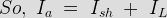
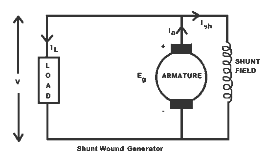
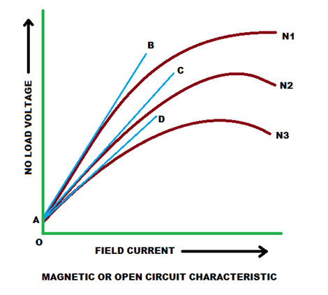
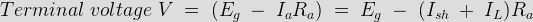
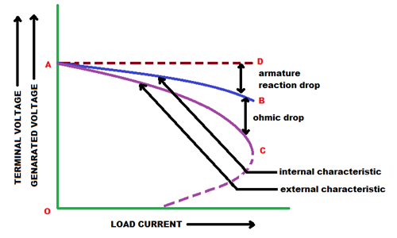
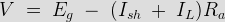

• Critical Load Resistance
• Internal Characteristic
• External Characteristic
In shunt wound DC generators the field windings are connected in parallel with armature conductors as shown in figure below. In these type of generators the armature electric current Ia divides in two parts. One part is the shunt field electric current Ish flows through shunt field winding and the other part is the load current IL goes through the external load.


Three most important characteristic of shunt wound dc generators are discussed below:
Magnetic or Open Circuit Characteristic of Shunt Wound DC Generator
This curve is drawn between shunt field current(Ish) and the no load voltage (E0). For a given excitation electric current or field current, the emf generated at no load E0 varies in proportionally with the rotational speed of the armature. Here in the diagram the magnetic characteristiccurve for various speeds are drawn. Due to residual magnetism the curves start from a point A slightly up from the origin O. The upper portions of the curves are bend due to saturation. The external load resistance of the machine needs to be maintained greater than its critical value otherwise the machine will not excite or will stop running if it is already in motion. AB, AC and AD are the slops which give critical resistances at speeds N1, N2 and N3. Here, N1 > N2 > N3.
Critical Load Resistance of Shunt Wound DC Generator
This is the minimum external load resistance which is required to excite the shunt wound generator.

Internal Characteristic of Shunt Wound DC Generator
The internal characteristic curve represents the relation between the generated voltage Eg and the load current IL. When the generator is loaded then the generated voltage is decreased due to armature reaction. So, generated voltage will be lower than the emf generated at no load. Here in the figure below AD curve is showing the no load voltage curve and AB is the internal characteristic curve.
External Characteristic of Shunt Wound DC Generator
AC curve is showing the external characteristic of the shunt wound DC generator. It is showing the variation of terminal voltage with the load current. Ohmic drop due to armature resistance gives lesser terminal voltage the generated voltage. That is why the curve lies below the internal characteristic curve.

The terminal voltage can always be maintained constant by adjusting the of the load terminal.

When the load resistance of a shunt wound DC generator is decreased, then load current of the generator increased as shown in above figure. But the load current can be increased to a certain limit with (upto point C) the decrease of load resistance. Beyond this point, it shows a reversal in the characteristic. Any decrease of load resistance, results in electric current reduction and consequently, the external characteristic curve turns back as shown in the dotted line and ultimately the terminal voltage becomes zero. Though there is some voltage due to residual magnetism.
We know, Terminal voltage 
Now, when IL increased, then terminal voltage decreased. After a certain limit, due to heavy load current and increased ohmic drop, the terminal voltage is reduced drastically. This drastic reduction of terminal voltage across the load, results the drop in the load current although at that time load is high or load resistance is low.
That is why the load resistance of the machine must be maintained properly. The point in which the machine gives maximum electric current output is called breakdown point (point C in the picture).
 by
by